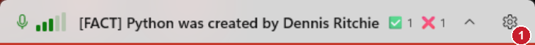
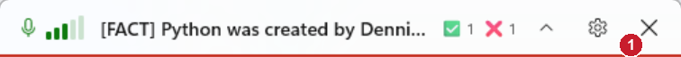

Close button
Only the pill changed, so only the pill is shown. Both pictures are Debug builds with sample data.
Before

The pill ended at the settings gear. The window has no title bar, so there was no way to close the app from its own window.
After

A close button sits at the right end, after the gear. It closes the app: listening stops, the microphone is released and the window position is saved.